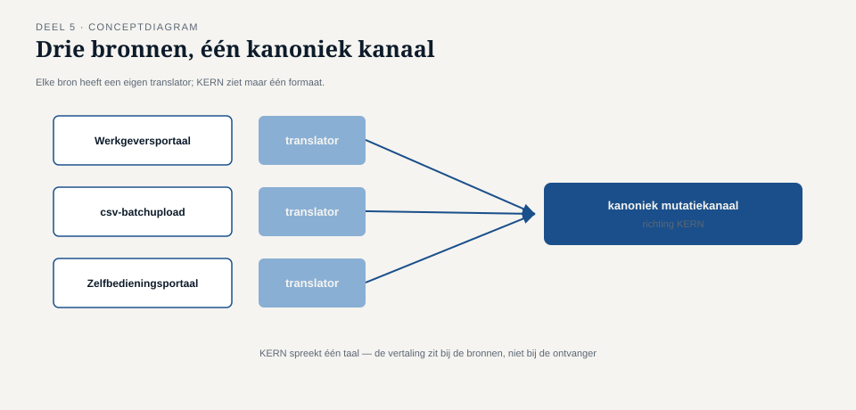

Deel 5 — Basistransformatie: translator, envelope wrapper, normalizer
Reader · Ductus-cursus Enterprise Integration Patterns · niveau 1 (fundament) · deel 5 van 10
5.0 Twee systemen, twee talen, één deelnemersnummer
Met router en filter op hun plaats leek het mutatielandschap bij Meridiaan eindelijk stabiel. Tot de externe pensioenadministrateur — de partij die de validatie van salariscorrecties uitvoert — een eigen koppelvlak bleek te hanteren dat niets leek op het interne formaat van KERN. Waar KERN een deelnemer aanduidt met een intern deelnemersnummer ("deelnemerId": "00482"), verwacht de administrateur een samengesteld sleutelveld van polisnummer plus geboortedatum ("polis": "NL-88213", "geboortedatum": "1978-04-12"). Waar KERN bedragen als geheel getal in centen doorgeeft, verwacht de administrateur een decimaal bedrag met twee cijfers achter de komma.
Caspars eerste reflex was voorstelbaar: pas de code in KERN aan zodat die berichten in het formaat van de administrateur aanmaakt. Het probleem daarmee werd zichtbaar zodra een tweede externe partij, de toekomstige koppeling met een tweede pensioenadministrateur voor een deelfusie, hetzelfde traject moest doorlopen — met wéér een ander formaat. KERN zou dan voor elke externe partij zijn eigen uitvoerformaat moeten kennen, wat de kernapplicatie onnodig laat groeien met kennis die niets met pensioenverwerking te maken heeft, alleen met de eigenaardigheden van externe koppelvlakken.
Dit deel behandelt drie patronen die dit voorkomen: de translator, die een bericht van het ene formaat naar het andere omzet; de envelope wrapper, die metadata rond een bericht toevoegt of verwijdert zonder de inhoud te raken; en de normalizer, die meerdere binnenkomende varianten samenbrengt tot één interne kanonieke vorm.

5.1 De translator
Een translator (ook wel message translator) zet een bericht van het ene formaat om naar het andere, zonder de betekenis te veranderen. Het cruciale ontwerpprincipe is waar deze vertaling wordt geplaatst: niet in KERN, en niet bij de externe administrateur, maar in een aparte, tussenliggende component die aan beide kanten van het kanaal precies één formaat kent.
Dit lijkt een subtiel verschil met "KERN past zijn uitvoer aan", maar het gevolg is groot. Met een aparte translator blijft KERN uitsluitend het interne formaat spreken — naar elk kanaal, altijd. De translator, en niet KERN, draagt de kennis over wat de externe administrateur specifiek verwacht. Komt er een derde externe partij bij met een derde formaat? Dan komt er een derde translator, en KERN verandert niet.
Kernzin 5 van de cursus: elk systeem hoort precies één taal te spreken — de zijne. Vertalen is het werk van de grens, niet van het systeem zelf.
Een translator moet, om houdbaar te blijven, aan twee eisen voldoen:
Hij vertaalt structuur en representatie, niet betekenis. Een deelnemersnummer omzetten naar een polisnummer-plus-geboortedatum-sleutel is vertalen, mits de onderliggende identiteit van de deelnemer hetzelfde blijft. Zodra een translator inhoudelijke beslissingen begint te nemen — bijvoorbeeld: "als het bedrag boven €5.000 is, stuur een ander veld mee" — is hij niet langer een translator maar een stuk verborgen bedrijfslogica die eigenlijk in de applicatie thuishoort, of een filter (deel 4).
Hij is in twee richtingen consistent, ook als hij maar in één richting wordt gebruikt. Ook wanneer alleen berichten van KERN náár de administrateur worden vertaald, is het waardevol om vast te leggen hoe de vertaling in omgekeerde richting zou lopen — dat dwingt af dat de vertaling geen informatie stilzwijgend laat vallen. Bij Meridiaan bleek deze discipline waardevol toen de administrateur van foutmeldingen een antwoordbericht terugstuurde: omdat de vertaalregels al in kaart waren gebracht, kon de terugvertaling zonder gissen worden gebouwd.

5.2 De envelope wrapper
Niet elk verschil tussen formaten zit in de inhoud. Soms verschilt alleen wat er omheen staat: headers, ondertekening, versie-informatie, transportmetadata die een extern koppelvlak vereist maar die voor de eigenlijke boodschap niet relevant is.
Een envelope wrapper voegt zo'n omhulsel toe (of verwijdert het) zonder de kerninhoud aan te raken. Het verschil met een translator is precies dit: een translator verandert de inhoud zelf, een envelope wrapper verandert alleen wat eromheen zit.
Bij de koppeling met de externe administrateur bleek dit onderscheid praktisch waardevol. De administrateur vereiste dat elk bericht werd verpakt in een SOAP-envelope met een digitale ondertekening en een verplicht versienummer van het koppelvlak — niets daarvan raakte de inhoud van de mutatie zelf. Door dit als aparte envelope wrapper te bouwen, ná de translator, kon de vertaling van de inhoud (5.1) onveranderd blijven werken, zelfs toen de administrateur een half jaar later het versienummer van de envelope wijzigde zonder de inhoudelijke specificatie aan te passen. Was de envelogica vermengd met de vertaallogica geweest, dan had die wijziging een onnodig risico op regressie in de inhoudsvertaling met zich meegebracht.
Vuistregel: als een wijziging alleen "de buitenkant" raakt, hoort hij in de envelope wrapper; raakt hij de betekenis van een veld, dan hoort hij in de translator.
5.3 De normalizer
Waar translator en envelope wrapper werken met precies twee formaten (intern en één extern), lost een normalizer een ander probleem op: meerdere, verschillende binnenkomende varianten samenbrengen tot één interne, kanonieke vorm.
Dit patroon werd relevant toen bleek dat het Werkgeversportaal niet de enige bron van mutaties was. Een aantal grote werkgevers levert mutaties nog altijd aan via een oudere batchupload in csv-formaat, en een derde bron — een zelfbedieningsportaal voor kleinere werkgevers dat later dat jaar werd gelanceerd — leverde weer een eigen JSON-variant. Drie invoervormen, één interne verwerking in KERN.
Een normalizer lost dit op door vóór elke bron een eigen, bronspecifieke translator te plaatsen (csv → intern formaat, portaal-JSON → intern formaat, Werkgeversportaal-formaat → intern formaat, wat hier toevallig al gelijk was), die allemaal uitmonden op hetzelfde interne mutatiekanaal. Vanaf dat kanaal ziet KERN nooit meer dan één formaat, ongeacht welke van de drie bronnen het bericht oorspronkelijk aanleverde.
Het onderscheid met "gewoon drie keer een translator bouwen" is conceptueel: een normalizer is het patroon dat expliciet maakt dat er meerdere bronnen naar één kanonieke vorm convergeren, terwijl een translator (5.1) doorgaans één bron en één bestemming veronderstelt. In de praktijk is een normalizer dan ook vaak letterlijk een verzameling translators die op hetzelfde uitgaande kanaal uitkomen — het is geen ander bouwwerk, maar wel een andere manier om ernaar te kijken, met een eigen implicatie: bij een normalizer moet je expliciet vastleggen wat de kanonieke vorm ís, onafhankelijk van welke bron toevallig het eerst werd aangesloten. Doe je dat niet, dan wordt de kanonieke vorm stilzwijgend "wat de eerste bron toevallig aanlevert" — met alle problemen van dien zodra die eerste bron zelf verandert.

5.4 Drie patronen, drie verantwoordelijkheden
De drie patronen van dit deel lossen aantoonbaar verschillende problemen op, en het is de moeite waard ze scherp naast elkaar te zetten:
| Patroon | Probleem | Verandert de inhoud? |
|---|---|---|
| Translator | Eén bron, één bestemming, verschillend formaat | Ja |
| Envelope wrapper | Metadata rond het bericht wijkt af van de inhoud | Nee |
| Normalizer | Meerdere bronnen, één kanonieke bestemmingsvorm | Ja (per bron) |
Alle drie delen hetzelfde onderliggende principe uit kernzin 5: elk systeem spreekt zijn eigen taal, en het transformeren daartussen is expliciet, herkenbaar werk — niet iets dat verstopt zit in de kernlogica van een applicatie die eigenlijk alleen over pensioenverwerking zou moeten gaan.
Samenvatting van deel 5
- Vertaalwerk hoort aan de grens tussen systemen, niet in de applicatie zelf — elk systeem spreekt precies één taal, de zijne.
- Een translator zet inhoud om tussen twee formaten; hij vertaalt structuur en representatie, nooit betekenis, en blijft in twee richtingen consistent.
- Een envelope wrapper voegt metadata toe of verwijdert die, zonder de kerninhoud te raken — gescheiden houden van de translator voorkomt onnodig regressierisico bij wijzigingen die alleen de buitenkant raken.
- Een normalizer brengt meerdere binnenkomende varianten samen tot één interne, kanonieke vorm — vaak een verzameling translators die op één kanaal uitkomen, met als aparte eis dat de kanonieke vorm expliciet is vastgelegd.
Vooruitblik
Deel 6 verdiept het onderscheid tussen point-to-point en publish-subscribe kanalen dat in deel 2 is geïntroduceerd — met de vraag wat er verandert zodra niet één, maar meerdere onafhankelijke systemen op hetzelfde event moeten reageren, zoals bij de eerdere uitbreiding met het Nabestaandenloket.